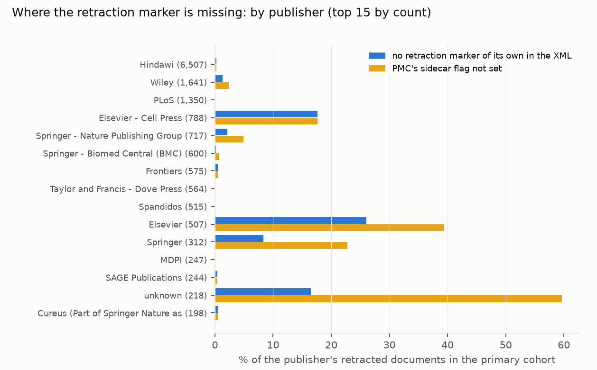
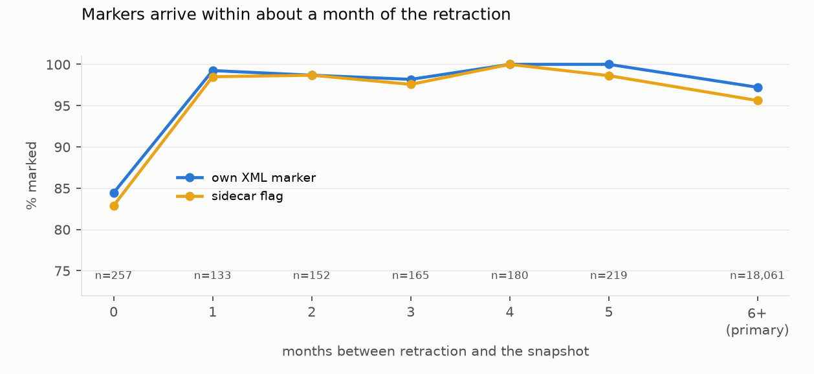
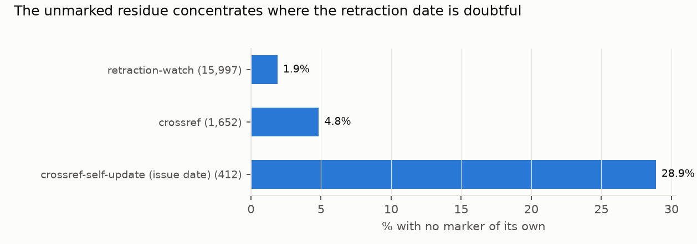
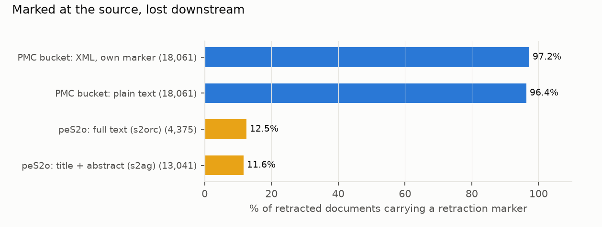

Verdict: Refuted for the source corpus.
The lead's hypothesis was that most retracted articles in open full-text corpora carry no machine-readable marker. In the PMC bucket the opposite holds. One step downstream the hypothesis holds for the same papers: of 3,235 retracted papers that are in both PMC and peS2o, PMC's files mark 95.7%, and peS2o's text marks 9.1%.
- H1 (more than 50% of retracted articles are unmarked in the distributed XML): Refuted.
- 1.9% are unmarked (95% interval 1.0–3.3%), over 17,649 documents in 1,458 journals retracted at least 180 days before the snapshot.
- With the D3 fix (links on cited works no longer count), 2.2% (1.1–4.1%) are unmarked.
- As first computed, with 412 documents that have no real retraction date still in the cohort, the figure was 2.4% (1.1–4.7%). D5 moved those 412 to the undated stratum.
- H2 (PMC's own
is_retractedflag covers at least 90%): Supported. 96.9% (94.9–98.2%). - H3 (the plain-text rendition loses at least 5 points of markers relative to the XML): Refuted. 0.8 points (0.4–1.3). PMC writes "RETRACTED ARTICLE" into the header of the text file itself.
- Where the corrected record does not reach.
- 382 dated retracted documents (2.2%) carry neither a marker of their own nor PMC's flag. They concentrate at Cell Press (18% of 788) and Elsevier (13% of 332).
- 119 more are among the 412 undatable documents, which are mostly Elsevier.
- Markers arrive fast. Of articles retracted in the last 30 days before the snapshot, 84% were already marked. After the first month the figure is 98–100%.
- peS2o (secondary). peS2o v2 holds 17,416 matched retracted papers. 47.2% of them say so in their text, a lower
bound.
- The marked share is high only because of IEEE. Three-quarters of the marked documents are IEEE's 2009–2011 retractions, whose records are retitled "Notice of Retraction" (title and abstract only). Without IEEE, 19.0% are marked.
- Full text: 12.5% marked.
- The same papers as PMC: 9.1% marked.
- Correction after review. The draft reported 12% for peS2o, because its pattern missed "Notice of Retraction" when run into the title. The draft also reported a staleness effect that does not exist.
In plain terms
When a scientific paper is retracted, the publisher posts a notice, and the paper is supposed to be flagged everywhere it appears. A worry behind this study is that the copies used to build AI search tools and to train language models never get the flag, so a model keeps treating withdrawn research as sound.
We checked this at PubMed Central's Open Access collection, the biggest open source of full-text biomedical papers and what most open AI pipelines download. We looked at about 18,000 papers retracted at least six months earlier: - 98% carried a marker in the file itself, almost always a structured link from the paper to its retraction notice; - PubMed Central's own "retracted" flag covered 97%; - even the plain-text version is labelled "RETRACTED ARTICLE" at the top; - new retractions are marked within about a month.
So the lead's claim that most retracted papers go unmarked is false for this source.
The gap at the source is small but real: about 400 retracted papers had no marker and no flag, about half of them from Elsevier and Cell Press journals. The bigger problem is one step downstream. In peS2o, an open dataset built from the same kinds of papers to train language models, the copies of PubMed Central's retracted papers almost never say they were retracted: about one in eleven do, against 96 in 100 at the source. The markers are there, but the pipeline that built peS2o did not keep them.
What was asked
The lead (trust-corrected-record-machine-readable, Advancing Trust in Knowledge) proposed that, in the open full-text
corpora that retrieval-augmented generation (RAG) and pretraining pipelines ingest, more than half of the documents
retracted by the freeze date carry no machine-readable retraction marker in the file as distributed.
Prior work compared retraction flags across bibliographic databases (Ortega & Delgado-Quirós 2024; Schneider et al. 2023; Hauschke & Nazarovets 2025). Propagation from Retraction Watch to Crossref and OpenAlex was being measured (Lux 2026). Nobody had measured the marker inside the full-text files themselves.
The plan (plan.md, committed before any file was fetched) set three tests:
- H1: more than 50% of the primary cohort unmarked in the XML. Supported if the interval's lower bound exceeds
50%; Refuted if its upper bound is below 50%.
- H2: PMC's sidecar flag covering at least 90%.
- H3: the XML marked at least 5 points more often than the text.
Scope changes, made before any data were seen: - the lead's RAG testbed was dropped, because it needs the shared GPU; - Europe PMC was not treated as a separate corpus, because its Open Access full text is built from the same XML.
How it was done
- Snapshot. The bucket's daily inventory of 21 October 2026 lists 9,273,077 PMCIDs. For each, the latest version was taken.
- Registry. Four layers, fetched on 22 October 2026:
- Retraction Watch: 67,896 retractions, with reinstated papers dropped;
- the targets of Crossref retraction assertions: 113,832;
- PubMed's "Retracted Publication": 35,195;
- OpenAlex's
is_retracted: 137,044.
These were matched to PMC by PMID, else DOI, through NCBI's PMC-ids file.
- Exclusions.
- Retraction notices themselves, by identifier and by XML article-type = retraction (162). OpenAlex flags notices
as retracted, so 20,354 OpenAlex-only entries were excluded as notices.
- A first version of the rule also excluded originals whose registry entry reuses the original's own identifier
for the notice: 29,611 Crossref self-updates, and Retraction Watch rows giving the original's DOI or PMID as the
notice's. This was corrected before any file was read (D1).
- Contamination left in. 73 primary documents (0.4%) are notices or retracted corrigenda that the type check
let in: corrections, a JBC "Withdrawal:" typed as a correction, and two "Retraction and republication" notices.
98% of them count as marked, and excluding them moves the D3 unmarked share (preregistered cohort) from 2.77% to 2.79% (review, finding
5).
- Cohort. 17,649 documents retracted on or before 24 April 2026 (180 days before the snapshot), dated by Retraction
Watch, else by a separate Crossref retraction notice.
- Latency set: 1,106 retracted in the last 180 days.
- Undated: 1,142 documents. These are 730 dated by neither source (PubMed-only or OpenAlex-only), plus 412 whose
only "date" is a Crossref self-update, which carries the issue date rather than a retraction date (D4, D5).
- Markers (code committed before any file was parsed):
- Structured JATS: a related-article of a retraction type; notes, custom-meta, a pub-history event or
an article-version naming retraction.
- Textual: a title beginning "Retracted", "Retraction" or "Withdrawn"; a retraction statement; the token
"RETRACTED".
- Plain text: the textual rules.
- Sidecar: is_retracted.
- Intervals. A cluster bootstrap over journals, 2,000 resamples.
- The cluster key is the ISSN found first in the XML. 24 journals are split across print and electronic ISSNs.
- Alternative keys give the same picture: journal name 1.4–4.9%, publisher 1.0–6.9%, against 1.2–5.7% for the D3
share in the first cut.
- Validation, by the study's AI agent:
- (a) 100 documents, stratified by the detector's verdict, labelled from the title, the front-matter elements and
every passage matching retract or withdraw (selected by regular expression, not the full XML). This check is
therefore not independent of the detector's vocabulary.
- (b) 50 unmarked documents checked against Crossref and Retraction Watch for a real retraction.
Results
The figures below are for the D5 cohort of 17,649 documents unless stated.
What the markers are
This subsection is on the preregistered cohort of 18,061. The structured link does nearly all the work: 95.6% of the preregistered cohort carry a related-article of type
retraction-forward pointing to the notice, outside the reference list (D3).
- How PMC adds it. The link is added when the notice is deposited, and PMC rewrites the article's files in place
(D2). 18,060 of the 18,061 cohort sidecars, version 1 included, were last modified after the retraction; the
exception is PMC8736302. 99% of the cohort is still at version 1.
- Text markers. A title prefix ("RETRACTED:", "RETRACTED ARTICLE:", "Retracted:") appears in 9.6% of documents,
and a retraction statement in 13.6%. Only 1.5% are marked by text alone.
- Flag and header. PMC's sidecar flag and the "RETRACTED ARTICLE" header of the text file are the same piece of
PMC metadata. Neither appears on a document without an XML marker. 356 documents carry an XML marker without the
flag.
Where the marker is missing (results/figures/F1_publishers.png)


| documents | no marker of its own (D3) | sidecar flag not set | |
|---|---|---|---|
| Hindawi | 6,507 | 0.2% | 0.2% |
| Wiley | 1,638 | 1.2% | 2.2% |
| PLOS | 1,350 | 0% | 0% |
| Elsevier – Cell Press | 788 | 17.6% | 17.6% |
| Springer – Nature | 717 | 2.1% | 4.9% |
| Elsevier | 332 | 13.0% | 32.2% |
| Springer | 306 | 8.5% | 21.9% |
The mass Hindawi retractions of 2023 are almost all marked: 0.2% unmarked (0.07–0.5%), against 3.3% (1.6–5.9%) for everything else.
How fast (results/figures/F2_latency.png)


Of documents retracted in the 30 days before the snapshot, 84% carried an XML marker of their own and 83% the flag. In each later month up to six, 98–100% carried the marker and 97.6–100% the flag. This is a cross-section, not a follow-up of the same documents.
The date problem (results/figures/F3_date_source.png)


In the cohort as preregistered:
| date source | unmarked (D3 measure) |
|---|---|
| Retraction Watch | 1.9% |
| a separate Crossref notice | 4.8% |
| a Crossref self-update only (412 documents, mostly Elsevier) | 28.9% |
- What a self-update date is. In a self-update, the article's own Crossref record asserts the retraction, and the date it carries is the article's issue date.
- The review's check. It looked at 15 of these documents. On all 15, the date equals the issue month. Ten are Heliyon records with a 2026 erratum and a 2026 deposit, so they were probably retracted recently and are latency, not failure. Four were deposited in 2024–25 with no erratum, so some are genuine old misses.
- D5 treats all 412 as undatable. In the undated stratum, which now holds 1,142 documents, 16.6% carry no marker of their own.
Validation
- (a) Detector.
- Of 50 documents the detector marked, 49 were marked. The one false positive was a retraction link on a cited work in the reference list; PMC flags retracted references this way.
- Of 50 it left unmarked, 47 were unmarked. Two of the three "misses" (A-009 and A-038) are themselves withdrawal notices that the type check let into the cohort. The third is a withdrawal statement ("has been withdrawn").
- Corrected across the whole cohort, 75 documents had been marked only through their references, and withdrawal wording adds 9 (D3).
- (b) Registry. Of 50 unmarked documents, 43 were real retractions or withdrawals, and one was unclear. Six were
not retractions of the document in question:
- one linked by Crossref to a withdrawn erratum of another paper (B-030);
- one linked to the erratum of its own paper, which Elsevier deposited as a retraction of ten papers (B-011);
- a republished version flagged by its predecessor's retraction;
- a corrigendum's retraction;
- an earlier duplicate's withdrawal;
- a withdrawal notice itself.
If about 12% of the unmarked are registry errors, the unmarked share among true retractions is about 2.4% in the preregistered cohort, rather than 2.8%.
Author manuscripts
509 author manuscripts in the preregistered cohort: 5.9% unmarked, against 2.3% for publisher versions.
peS2o: the marker after derivation (results/figures/F4_pes2o.png)


peS2o v2 (Allen Institute; knowledge cutoff 2023-01-03) was streamed in full: 38,972,211 documents, 22 shards.
- Matching. 36,894 dated registry DOIs retracted on or before 2022-07-07 (notices excluded under the D1 rule) were mapped to Semantic Scholar corpus ids through the public Graph API. 35,024 had an id, and 17,416 of these are in peS2o: 4,375 full text (s2orc) and 13,041 title and abstract (s2ag).
- Markers. The plain-text rules of §2 apply, with D5's fix: "notice of retraction" is also matched when run into
the following title ("Notice of RetractionThe Effects of…"), as peS2o renders IEEE's retitled records.
- 47.2% of matched documents are marked: 58.9% of title-and-abstract records and 12.5% of full texts.
- 6,160 of them are marked only through the run-together notice, nearly all with DOI prefix 10.1109 (IEEE).
- The draft's rule, without the fix, found 11.9%. The broader sensitivity rule ("retract" anywhere in the first line) finds 47.4%.
- By retraction year. Most of the marked share is IEEE's 2009–2011 retractions: 74% of the 738 retracted in 2009, 89% of 2,174 in 2010 and 91% of 3,688 in 2011. From 2014 on, 15–33% of each year's retractions are marked.
- The same papers in PMC (the downstream test). 3,235 matched documents are also in the PMC snapshot and are not
notices. PMC's own files mark 95.7% of them. Their peS2o text marks 9.1%: 9.2% of the 2,957 full texts and 8.3%
of the 278 title-and-abstract records. Outside the PMC registry, peS2o marks 59.3%.
- Dating. The peS2o registry still dates 166 matched documents (1.0%, mostly Elsevier) by a Crossref
self-update, the date D5 treats as undatable in the PMC arm. Some may have been retracted after peS2o's cutoff.
Excluding them moves the whole-set share from 47.2% to 47.6%, and the overlap from 95.7% / 9.1% to 96.2% / 9.1%
(n 3,132; confirmation pass,
review/reviewer_checks/confirm_pes2o.py). - Two undated documents. 2 of the 3,235 overlap documents are undated in the PMC arm. Without them the figures are 95.8% / 9.1%.
- Added after retraction. Within the overlap, documents that entered peS2o after their retraction are marked 6.4% of the time, against 10.1% for those added before (confirmation pass). A paper ingested after its retraction did not bring the marker with it.
- Dating. The peS2o registry still dates 166 matched documents (1.0%, mostly Elsevier) by a Crossref
self-update, the date D5 treats as undatable in the PMC arm. Some may have been retracted after peS2o's cutoff.
Excluding them moves the whole-set share from 47.2% to 47.6%, and the overlap from 95.7% / 9.1% to 96.2% / 9.1%
(n 3,132; confirmation pass,
- Staleness: no evidence either way. Semantic Scholar's "added" date is mostly its 2017–18 bulk ingest, so whether a paper was added before or after its retraction is confounded with retraction year. Within retractions from 2015 on, papers added after their retraction are marked 19.9% of the time (n 2,305), and those added before 20.5% (n 6,281).
- Lower bound. These counts are a lower bound on unmarked retracted content in peS2o: unmatched DOIs and silent retractions are not counted.
The overlay
results/overlay/retraction_overlay.csv.gz is the released overlay.
- Contents. It holds 22,174 PMC documents in the union registry, with their layers, the retraction date and its
source. For the 19,898 that are in the snapshot, it also records what their own files say.
- Its use. 619 snapshot documents have neither a marker of their own nor PMC's flag. For those, the overlay is the
only machine-readable record of the retraction in this corpus.
- Rebuild: registry.py → match.py → fetch.py → analysis.py parse → sensitivity_d3.py → overlay.py.
What this does and does not show
- The lead's premise fails at the source. PMC marks retracted articles inside the distributed files: in the structure (a JATS link), in its own metadata flag, and in the text header. A pipeline that reads PMC XML or text and looks for the marker can find it for about 98% of retracted articles.
- But "can find" is not "does find", and peS2o shows the difference.
- The same retracted papers that PMC marks 96% of the time carry a marker in peS2o's text 9% of the time.
- The marker is a
related-articleelement and a header line, and a pipeline that strips front matter or keeps body text discards both. - This study measured one derived corpus, not every pipeline.
- The high peS2o share is mostly IEEE. It reflects IEEE's practice of retitling its retracted records. It does not show that peS2o keeps markers in general.
- Snapshots age. PMC rewrites files in place (D2), so a corpus copied from the bucket before an article's retraction keeps the unmarked file. This study saw the bucket as it was on 22 October 2026 and cannot see older copies.
- Conditional on the registry. Silent retractions are invisible here. Among sampled unmarked documents, about 12% were not retractions of that document.
- AI adjudication. Both validations were done by the study's AI agent, which also wrote the detector. The independent review re-read 16 of the 8a items and checked the 8b labels on Crossref, and found every label correct.
Process and deviations
- Preregistration:
plan.md. Novelty search on 22 October 2026. - Deviations (
deviations.md):- D1: self-referencing notice identifiers, fixed before any file was fetched.
- D2: files rewritten in place; local copies hashed in
snapshot_files_sha256.csv.gz. - D3: reference-list links and withdrawal wording. This is a sensitivity analysis; the preregistered figures are kept.
- D4: Crossref self-update dates.
- D5: the changes after the independent review:
- the peS2o rule for run-together notices;
- the staleness, by-year and downstream analyses, moved into committed code (
pes2o_secondary.py); - the self-update-dated documents moved to the undated stratum (
post_review.py); - notice contamination and the validation wording.
The preregistered H1–H3 values on the first cohort (primary.json) remain in the record. No verdict depends on a
deviation.
- Independent review: Fable, 2026-10-23, "fix first" (review/review.md). The PMC arm was reproduced; the peS2o
arm was not. The fixes are in this version, and a confirmation pass follows.
Reproducing it
- Registry and corpus:
code/registry.py,code/snapshot.py,code/match.py,code/fetch.py. - Analysis:
code/analysis.py parseandrun;code/validation.py sheetsandscore(labels indata/validation/);code/sensitivity_d3.py,code/sensitivity_d4.py,code/overlay.py. - Post-review headline:
code/post_review.py(→results/tables/primary_d5.json). - peS2o:
code/pes2o.py, thencode/pes2o_secondary.py(→pes2o_secondary.json). - Figures:
code/figures.py.
The Python environment is in venv/ (pandas, lxml, pyarrow, matplotlib).